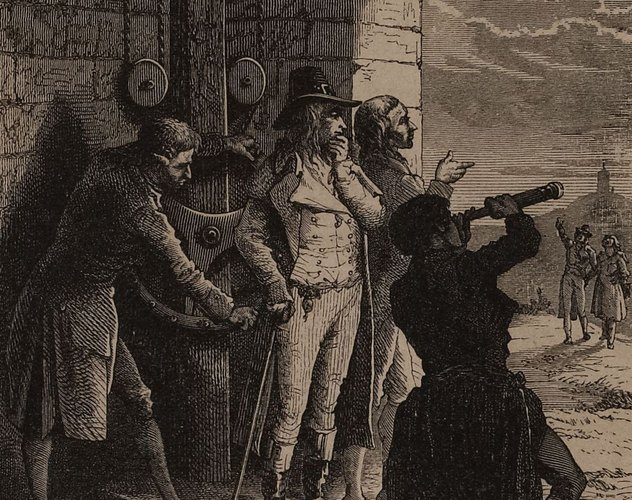
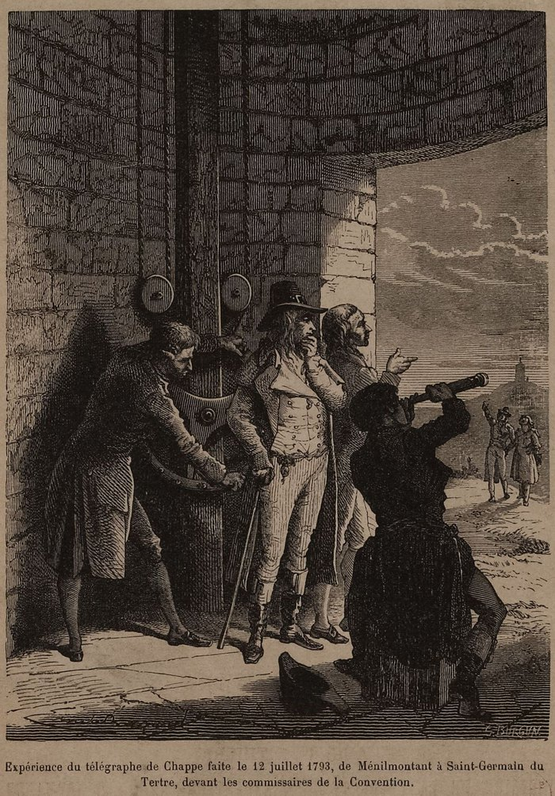
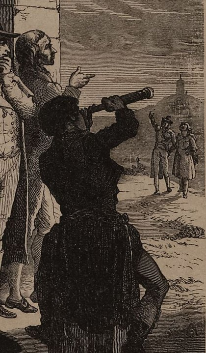

Kilometers
Today: use kilometers for long distances, change between kilometers and meters (1 km = 1,000 m), and tell travel distance from direct distance. Dimensions Math 3B, Chapter 11, Lesson 3 · Kilometers

Paris, France · about 230 years ago

How are meters and kilometers related?
Ten pieces of 100 m make 1,000 m, and 1,000 m is 1 kilometer. We use kilometers for long distances.
You will…
- Build a kilometer out of 100 m pieces.
- Change kilometers and meters both ways: 1 km = 1,000 m.
- Compare distances in the same unit, and tell a winding road from a straight path.
Why the telegraph?
On the left is an old engraving of the first test of Claude Chappe's telegraph in July 1793. It was drawn many years later, for a science book in the 1800s. Inside the tower, men move the handles that turn the arms on the roof. On the right, a close-up: a man looks through a telescope at the next tower, far away on a hill.


Chappe's towers stood far apart, so far that people could only see the next tower through a telescope. By 1794 a line of towers sent messages from Paris all the way to the city of Lille. Distances like that are measured in kilometers.
Today's math: ten pieces of 100 m make 1,000 m, and 1,000 m is 1 kilometer. A kilometer is about a 15-minute walk.
A kilometer is 1,000 meters, so today you'll use thousands and hundreds. Type each answer, then check. You can fix any answer and check again.
Meters and centimeters
Think: The Path to the Tower
🔨 Do · ✏️ WriteParis, 1793. A messenger runs a note from the workshop up to the tower. The path is 1,900 m long.
An empty path with a green flag at the tower. Drag the ▶ end to lay the path, 100 m at a time. Watch what happens when ten pieces are down.
Build the path
Drag the end of the road to the tower.
What happened at ten?
Say it in kilometers and meters
Tell how
1,900 m = 1 km 900 m. Ten pieces of 100 m joined into 1 km. Nine more pieces made 900 m.
1 kilometer = 1,000 meters
- Ten hundreds make a thousand. Ten pieces of 100 m make 1,000 m. 1,000 m = 1 km. A kilometer is about a 15-minute walk.
- Meters to kilometers and meters. Find the thousands: they are the kilometers. 3,400 m = 3 km 400 m.
- Kilometers and meters to meters. Every kilometer is 1,000 m. 3 km 400 m = 3,000 m + 400 m = 3,400 m.
- Not 100! 6 km is 6,000 m, not 600 m.
- Compare in the same unit. Change both distances to meters first.
- Travel distance and direct distance. The distance along a road or a curved path is the travel distance. The distance along a straight line is the direct distance.
A distance written with two units, like 3 km 400 m, uses compound units.
Four ways to work with kilometers
Your Turn: A 2,600 m Road
🔨 DoA road is 2,600 m long. Build it, then write its length both ways.
An empty road with a green flag at the end. Drag the ▶ end to lay pieces of 100 m.
Build the road
Drag the end of the road to the flag.
Kilometers and meters
Now back to meters
Kai Picks the Bigger Number
🔨 Do · ✏️ WriteRoad A is 900 m long. Road B is 1 km 20 m long. Kai says, "Road A is longer, because 900 is bigger than 1."
Both roads laid on the same ruler, starting at 0. The gold lines show where each road ends.
Same unit first
Compare
Drag the right symbol into the box.
Help Kai
Leo Uses 100
🔨 Do · ✏️ WriteLeo remembers that 1 m = 100 cm. He says, "So 9 km must be 900 m."
An empty road with a green flag at the first km stone. Build one kilometer and count the pieces.
Build one kilometer
Drag the end of the road to the flag.
How many meters?
Now 9 kilometers
Help Leo
Juno's Two Routes
🔨 Do · ✏️ WriteA winding road goes from Start to End in four parts. A straight path goes from Start to End too. Juno says, "They go to the same place, so they must be the same distance."
The brown road bends four times, and each part shows its length. The blue dashed line is the straight path.
Lay the road out straight
Press Lay the road out straight.
The travel distance
Which is shorter?
Help Juno
On Your Own: Both Ways
✏️ WriteA bike trail is 7 km 300 m long. A hiking trail is 6,300 m long. Write each one the other way.
The bike trail drawn as gold 1 km bars and grey 100 m pieces on a ruler.
The bike trail
The hiking trail
Tell how you know
Three Stops
🔨 DoA message has to travel along a road to three stops. Stop 1 is at 900 m, Stop 2 is at 2 km 500 m, and Stop 3 is at 2,900 m. Move it to each stop in order.
An empty road with three red flags. Drag the ▶ end of the road. A flag turns green when the message reaches it.
Problem 1 · Stop 1
Drag the end of the road to Stop 1.
Problem 1 · How far?
Problem 2 · Stop 2
Drag the end of the road to Stop 2.
Problem 2 · In meters
Problem 3 · Stop 3
Drag the end of the road to Stop 3.
Problem 3 · In kilometers and meters
Prove It
✏️ WriteProblem 4 · Prove It
Watch the Zero
One trail is 7 km 90 m long. Another is 7,900 m long. Which is longer, and by how many meters?
Turn in your work
- Check the list below. Jobs 1 to 8 are required. The Bonus is optional.
- Press 📋 Gather my answers, then 📋 Copy. Or press 🖨️ Print or save as PDF.
- Open this lesson's assignment in Canvas.
- Paste your answers (or upload your PDF and journal photo), then press Submit.
All my answers
Your answers and your work on this page save on this device as you go.
Before you turn in
- I finished Jobs 1 to 8.
- I built a kilometer from 100 m pieces and changed kilometers and meters both ways.
- I compared two distances in the same unit.
- I tried the Bonus. (optional)
Lesson 3.11.04 · Subtracting from Kilometers
Next time, you'll take meters away from whole kilometers and find out how far is left to go.
Mozart's Symphony No. 34
The slow part of a symphony by Wolfgang Amadeus Mozart, written in 1780. Only the strings and a few woodwinds play, soft and smooth.
Symphony No. 34 in C major, K. 338, second part (Andante di molto), Wolfgang Amadeus Mozart (1780). Recording from the European Archive (Musopen), public domain, via Wikimedia Commons.